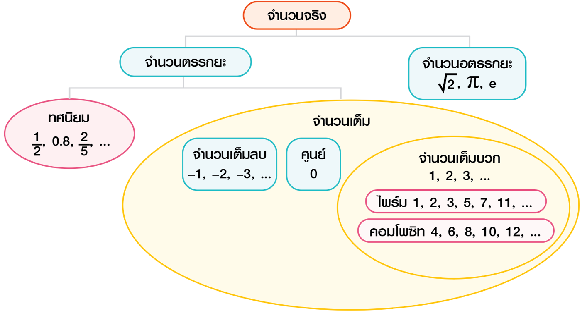
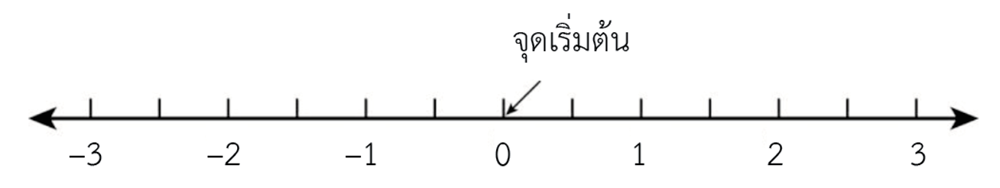
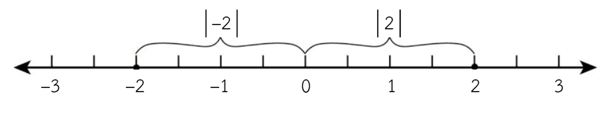

1.1 วิวัฒนาการของระบบจำนวนและตัวเลข
ในยุคก่อนประวัติศาสตร์ มนุษย์เริ่มบันทึกปริมาณด้วยวิธีง่ายๆ เช่น การขีดรอยบนผนังถ้ำหรือกระดูกสัตว์ เพื่อบอกจำนวนสัตว์ที่ล่าได้หรือการนับวันเวลา ต่อมามนุษย์ใช้การนับนิ้วมือและก้อนหินเป็นตัวแทนของจำนวน และพัฒนาการใช้สัญลักษณ์รอยขีด หรือที่เรียกว่า "รอยขีดทอลลี่" เพื่อบันทึกจำนวนได้ชัดเจนขึ้น
เมื่ออารยธรรมเริ่มเจริญก้าวหน้า ชาวสุเมเรียนได้พัฒนาระบบตัวเลขโดยใช้ดินเหนียวและอักษรรูปลิ่มหรือคูนีฟอร์ม จากนั้นชาวบาบิโลเนียนได้สร้างระบบเลขฐาน 60 ซึ่งยังคงใช้ในระบบเวลา เช่น วินาที นาที และชั่วโมงในนาฬิกา ต่อมาอารยธรรมอียิปต์ กรีก และโรมัน ได้พัฒนาระบบตัวเลขของตนเอง จนกระทั่งเกิดระบบตัวเลขฮินดู–อารบิก ซึ่งเป็นพื้นฐานของตัวเลข 0–9 ที่ใช้กันทั่วโลกในปัจจุบัน
1.2 โครงสร้างของระบบจำนวน
ระบบจำนวนเป็นแนวคิดเชิงนามธรรมที่ใช้บอกปริมาณและแทนค่าต่างๆ ด้วยสัญลักษณ์ตัวเลข นักคณิตศาสตร์ได้จัดหมวดหมู่ของจำนวนให้ง่ายต่อการศึกษา เช่น จำนวนธรรมชาติ จำนวนเต็ม จำนวนตรรกยะ และจำนวนอตรรกยะ โดยระบบจำนวนที่ใช้งานมากที่สุดในชีวิตประจำวันคือ "ระบบจำนวนจริง"
ระบบจำนวนจริงประกอบด้วยจำนวนธรรมชาติ ศูนย์ จำนวนเต็มบวกและลบ จำนวนตรรกยะ และจำนวนอตรรกยะ ซึ่งทั้งหมดรวมกันเป็นเซตของจำนวนจริง

1.3 จำนวนจริงและเส้นจำนวนจริง
จำนวนจริงเป็นกลุ่มของจำนวนที่ใช้บ่อยในชีวิตประจำวัน เช่น การวัดส่วนสูง น้ำหนัก เวลา และระยะทาง การแสดงความสัมพันธ์ของจำนวนจริงนิยมใช้ "เส้นจำนวนจริง" ซึ่งมีศูนย์เป็นจุดเริ่มต้น จำนวนบวกจะอยู่ทางขวาของศูนย์ และจำนวนลบจะอยู่ทางซ้ายของศูนย์
เส้นจำนวนช่วยให้เราเข้าใจการเปรียบเทียบค่าของจำนวน เช่น 2 มากกว่า 1 หรือ –3 น้อยกว่า –1 และช่วยให้เห็นตำแหน่งของจำนวนต่างๆ อย่างเป็นระบบ

1.4 ค่าสัมบูรณ์ของจำนวนจริง
ค่าสัมบูรณ์คือระยะห่างของจำนวนใดๆ จากศูนย์บนเส้นจำนวน โดยไม่สนใจเครื่องหมายบวกหรือลบ เช่น ค่าสัมบูรณ์ของ –2 และ 2 มีค่าเท่ากันคือ 2 หน่วย แนวคิดเรื่องค่าสัมบูรณ์ช่วยให้เข้าใจระยะห่างและขนาดของจำนวนได้ชัดเจนยิ่งขึ้น
